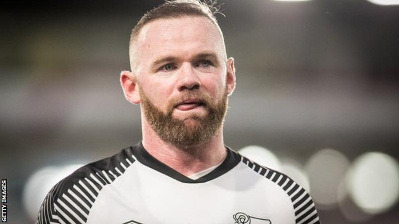

FA Cup fifth-round draw: Wayne Rooney to face former side Man Utd
Wayne Rooney will face his former side Manchester United in the fifth round of the FA Cup after Derby beat Northampton in their fourth-round replay.
Holders Manchester City, will travel to Sheffield Wednesday.
Chelsea will host Liverpool after they overcame Shrewsbury in a replay, while Arsenal travel to League One Portsmouth.
All eight ties will be played across three midweek nights from 3-5 March.
Rooney, who is United and England's all-time record goalscorer, joined Championship club Derby County as a player-coach in January from MLS side DC United.
Now 34, he played 559 times for United, scoring 253 goals.
He won five Premier League titles and each of the Champions League, Europa League and FA Cup once after joining from Everton for £27m in 2004.
Since leaving Old Trafford he has faced his former employers twice, losing both games during the 2017-18 season, while in a second spell at Everton.
Tottenham are at home to Norwich after beating Southampton in the final replay of the season.
Why are fifth-round ties being played in midweek? In a change to the usual format, all eight ties will be played across three midweek nights from 3-5 March, with no replays.
If any of the ties are level after 90 minutes there will be 30 minutes of extra time and, if necessary, penalties to determine a winner on the night.
It is the second season running that fifth-round replays have been removed from the competition in an attempt to alleviate fixture congestion.
In addition, the Premier League is having a mid-season break in February, with each team getting a weekend off.